v.
Overview
- Discuss Linear Classification
- Explain Support Vector Machine
- Explore Non-Linear SVM
Support Vector Machine
Linear Classification
- Decision surfaces are linear function of training data
- In $d$ dimensions, it is defined by a vector of parameters $\theta \in \R^d$ and scalar $\theta_0 \in \R$
- d-dimensional hyperplanes in the (d+1)-dimensional input space
- The hypothesis function is defined by:
$$ h(x;\theta,\theta_0) = sign(\theta^T x + \theta_0) = \begin{cases} +1 & if \> \theta^T x + \theta_0 >0 \\ -1 & otherwise \end{cases} $$
Hyperplane: $\theta^T x + \theta_0$
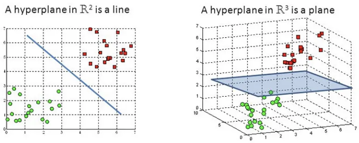Difficult to imagine when the number of features exceeds 3
Linear Classification
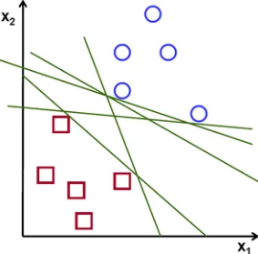Which line is better? And why?
Linear Classification
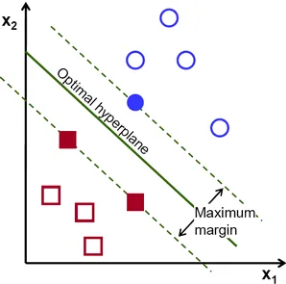- What we actually want is this 👉
- No the "empty" strip (street)
- Most data are "off the street"
- 3 data points are on the edge$\qquad\qquad\qquad\qquad\qquad\qquad$
of the street
Large Margin Classification
- Fitting the widest possible street between the
classes (wide margin) - Adding more training data "off the street"
does not affect the decision boundary at all
(the street remains unchanged) - Fully determined (supported) by data lying on $\qquad\qquad\qquad\qquad\qquad$
the edge $\implies$ Support Vector
Support Vector Classifier/SVM
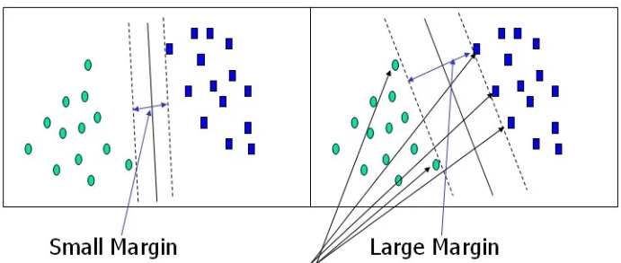- Questions:
- How wide the margin should be?
- What happens with data within the margin (i.e. violations)?
SVM: Feature Scaling
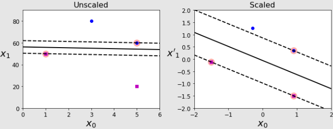- SVMs are sensitive to the scale of features (distance matters)
- Scaled and non-scaled data leads to different SVM models
- Mapping all features to the same scale without changing their relative relationships
SVM: Hard Margin
Hard margin classification: none of the data points can be within the margin (impossible to achieve in many cases)
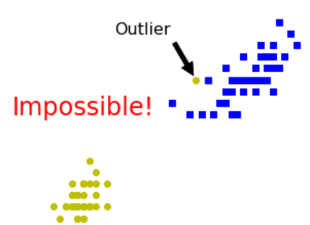In general: linearly non-separable data
SVM: Soft Margin
Soft margin classification: data points can be within the margin (allow violations)
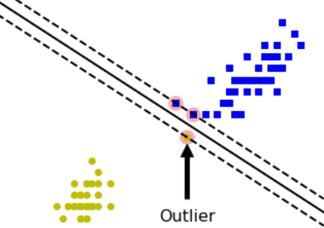Challenge: need to minimise the number of violations
Non-Linear SVM
Not Linear-Separable Data
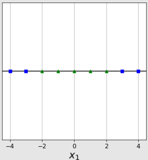How to separate the data?
Polynomial Features
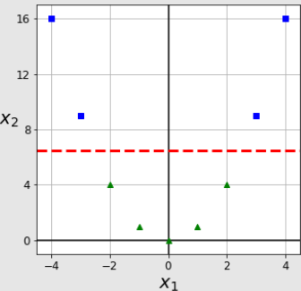$\qquad\qquad\qquad\qquad\qquad$- Idea: adding new "polynomial" features
- Example: $x_1$ is a $1D$ feature
- adding $x_2 = x_1^2$ of degree 2
- Data becomes linearly separable
- In general: add all the combinations of possible
expansions with degree $d$ - number of added features: $\frac{(n+d)!}{d!n!}$
- e.g. for 2 features $a$ and $b$, with expansion
degree $d=3$, we have: $a^3, b^3, a^2b, ab^2$
Polynomial Features Example
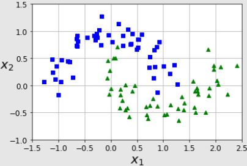 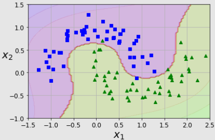Polynomial feature expansion with $d = 3$
Data Transformation
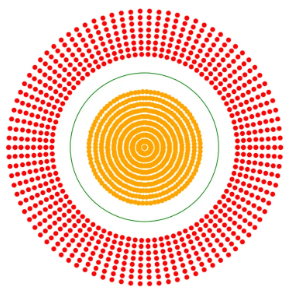
Can transform the original data to make it linear separable
(e.g. $Z = f(x,y) = \sqrt{x^2+y^2}$)
Transformation Problem
- Heavy load of calculations
- Non-concentric data points can be separated,$\qquad\qquad\qquad\qquad\qquad\quad$
but - distance calculation: $n(n-1)/2$
- square root: $O(log(n))$ for power and
$O(1)$ for addition - In total: $O(n^2 log(n))$
- Can be simplified by using the squared distance directly: $O(n^2)$
- Any other approach?
Kernel Trick
- The Kernel Trick: don’t need to find a suitable set of features here, but find similarity that it is valid for all sets of features
- not finding the transformation function $f(x,y)$ directly
- finding similarity of data points using a kernel function $g(x,y)$ (can be any function)
- As is many polynomial features are added without actually adding them
- No more new features, but new measurement
- Useful trick for non-linear data
Kernel Functions
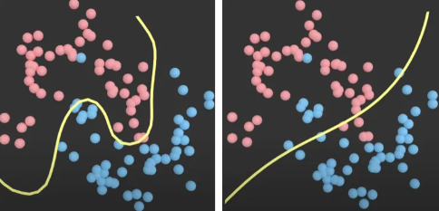$\gamma=1$ (left) and $\gamma=0.01$ (right)
- Gaussian kernel: $f(x) = ae^{-\frac{(x-b)^2}{2c^2}}$
- $a$: the height of the peak
- $b$: the position of the peak centre
- $c$: the standard deviation of the data
- Radial Basis Function (RBF) kernel: $K_{RBF}(x, x') = e^{-\gamma \Vert x-x' \Vert ^2}$
- $\gamma$: the hyperparameter that controls the lineality of the model $\qquad\quad$
- $x,x'$: represent the 2 data point vectors
- More kernel functions available: how to choose a good one?
- Rule of thumb: try linear kernel first; then Gaussian RBF kernel, then others
Summary
- Linear Classification
- Support Vector Machine
- Non-Linear SVM and the use of kernel functions
Questions?